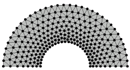
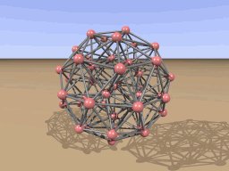

DistMesh Gallery - Movies
BackThe movies are encoded with DivX, download the "DivX Free Download" from http://www.divx.com/divx.
Mesh Generation with DistMesh
-
Mesh generation using the 2-D code distmesh2d. The animation shows
the iterative movement of the nodes and the retriangulations, for
different number of nodes and different geometries.

DivX AVI (11.9MB)
-
Mesh generation using the 3-D code distmeshnd.

DivX AVI (6.2MB)
Applications
See Per-Olof Perssons's homepage for more details.- Structural Vibration Control
Initial Final Eigenvalue 


MSMpeg4 AVI (1.6MB)
Initial Final Eigenvalue 


MSMpeg4 AVI (1.6MB)
- Structural Design Optimization
Initial Final 

MSMpeg4 AVI (2.0MB)
Initial Final 

MSMpeg4 AVI (1.7MB)
Per-Olof Persson
Department of Mathematics, UC Berkeley
persson@berkeley.edu